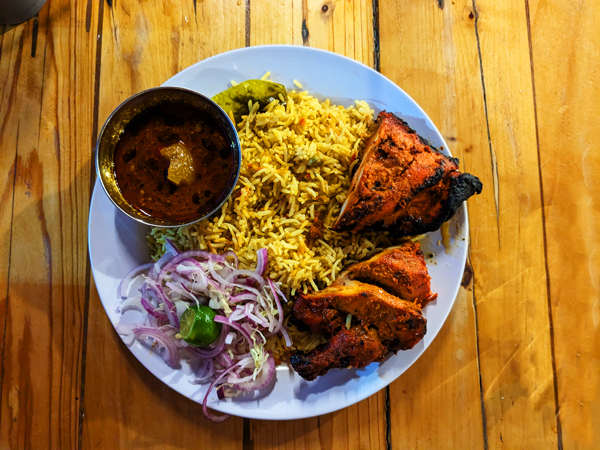
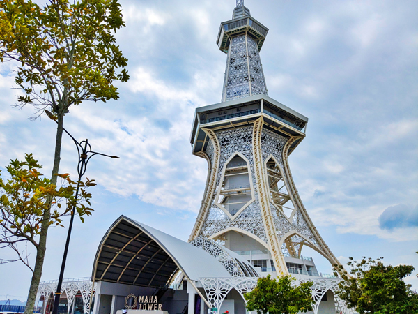
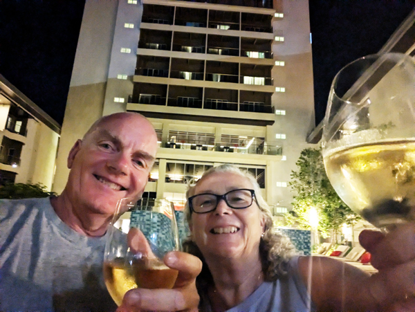
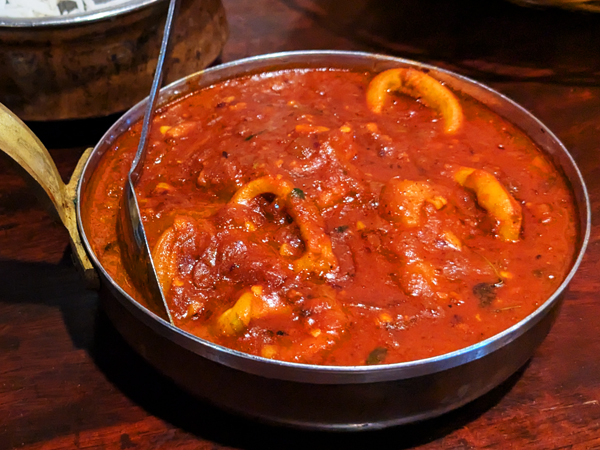
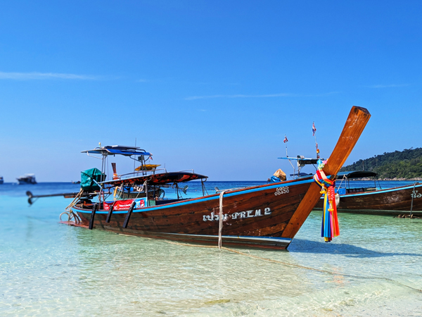

Monday 13th January Once again, our holiday started with me having to go for a PET scan. We left Kingsclere at midday and drove to Windsor. I was booked in for my scan at GenesisCare at 14:00 and we had booked a room at the Holiday Inn Express which was conveniently located next door. GenesisCare had said we could leave the car in their car park overnight so we parked there and then went and checked into the hotel. I had an hour to kill before my scan so walked into Windsor with Roz. She then went off to meet Aleks for coffee and I walked back to GenesisCare.
The scan all went OK. As with my previous PET can, it was a fairly boring couple of hours but everything was on time and I was out again by 16:00. I walked back into Windsor and met Roz and Alex in the Wetherspoons (The King and Castle). I had a pint in there while waiting for them to finish their coffees. Aleks then went home leaving us to go round a few pubs.
We left Aleks at the train station and went for a pint in The Windsor Castle. From there we walked across the river to Eton. The pubs there were either closed or lacking in decent beer options so we returned to Windsor and walked up to the Carpenters Arms for one. We went from there to The Two Brewers, a pub we had not been in before. This was probably the nicest pub we have been to in Windsor. We had a couple in there before walking back down the hill to Zizzi's where we had a couple of pizzas and a bottle of wine.

We decided that we should be reasonably sensible at this point and instead of going to more pubs, went back to the hotel where we had another couple of glasses of wine and a relatively early night.
Tuesday 14th January We were up by 6:30, had showers and checked out of the hotel. It was a drive of about 25 minutes to Heathrow, Terminal 4 where we had a wait of about 20 minutes before our meet and great driver turned up. We checked in, got rid of our luggage and were through security with plenty of time for our 10:25 Malaysian Airlines flight to KL. The flight departed on time and was not totally full so we had a bit more space than usual.
As with last year, the service was pretty good and we were given our first glasses of wine shortly after take-off. They kept the wine coming but we stopped drinking about half way through the flight so did not get too pissed. We had a meal a couple of hours into the flight and breakfast at about 4am Malaysian time. The flight landed at KLIA on time just before 7.
Wednesday 15th January KLIA was as bad as ever but we did get through the airport relatively quickly this year. We had to get on a bus from the satellite bit as the train is no longer running. We then had to clear immigration before getting our next flight to Langkawi. You are supposed to fill out an electronic form before getting to the immigration desks but the form is just about impossible to fill in using a phone. However, there were no queues at the desks and one of immigration officials just took all our details and stamped us into the country without bothering with the form. By 7:45 we were sat at the gate waiting for our next flight.
The connecting flight was also on time and we landed in Langkawi at 10:00. We had a bit of a wait for our luggage but by 10:30, we were outside at the taxi booth. We got a taxi straight to the Mercure at Cenang beach and arrived there by about 10:45.
There was a bit of confusion about which room we were getting and after a bit of discussion, we agreed to stay in a high up room for one night and then move to one of the poolside rooms tomorrow. Today's room was not ready yet so we went across the road to Ali's Bistro for our first roti canai of the trip. We bought a couple of bottles of wine from the duty free shop and returned to the hotel. We were told now that we would have two nights in the first room and move to a ground floor room on Friday but at least the first room was now ready.
We were given a room on the 7th floor facing away from the sea. This was probably a nicer room than the ground floor rooms but lacks the convenience of being by the pool. We were both totally knackered by this time so had showers and then fell asleep. I had not got any sleep on the flight and Roz had not slept much so although we did not want to sleep for too long, a couple of hours was needed.
By the time we woke up, the weather had deteriorated and it looked as if it had rained or was about to rain. We did both venture out at about 4. Roz went to the pool and I went for a short walk to complete my 10,000 steps for the day.
We had not been feeling great when we arrived but after our sleep and a bit of exercise, we were just about back to feeling 100%. We drank one of the bottles of wine sat on our balcony while trying to come up with some sort of plan for the four days in between leaving here and getting to Nai Yang. It is looking as if a ferry to Ko Lanta via Ko Lipe may be the best option.

We went out to eat at Viva Italian where we had eaten last year a few times. We had a few cocktails and food from the Indian upstairs. The weather had not been great since we arrived here and by the time we had finished eating, it was raining heavily. We left the restaurant and made it as far as Cinnamons Bar and had a few glasses of wine while waiting for the rain to clear. Eventually made it back to the hotel having had slightly more alcohol than we had planned. We had one more drink on the balcony before bed.
Thursday 16th January Neither of us were too badly hungover so we were able to get up and go across the road to Ali's for breakfast. We had a quick look at the beach and asked in a couple of travel agents about ferry tickets to Lanta. No-one seemed to be able to sell them and our banana shake place was closed so we returned to the hotel empty-handed.
The weather was pretty poor again today but it was sunny enough to go the pool for an hour once back at the hotel. We left when the rain started then went back for another 30 minutes or so but gave up on sunbathing after the second shower. This was probably long enough in the sun for our first day here anyway.
We went out and got banana shakes at lunchtime and it was just about dry enough to sit on our balcony to drink them. I went to the gym in the afternoon and managed a 5km run. Roz went for a swim in the rain.

We had planned to eat at Royale India tonight as we were not drinking but it was closed due to some sort of private function. Instead we returned to Ali's and had very good currys again. Back in the room by 8:30.
Friday 17th January We were up early again so went over the road to Ali's for breakfast. We asked at reception about moving rooms and as usual, there was a lot of confusion. We went and sat by the pool for an hour and by 10:45, they had sorted it out and we were able to move into room 014, one of the rooms with pool access. It is exactly the same as the room we were in last year and just round the corner from it.
We had another 30 minutes or so by the pool as the weather was better today than it had been so far on the trip, and then went into Kuah. We got a taxi from outside the hotel and were dropped at Eagle Square near the ferry terminal. We went straight into the terminal and bought tickets for the 9:15 ferry to Ko Lipe on Monday.

We had a wander round the eagle statue and then walked a mile or so through a slightly odd park to the Maha Tower. We had thought about going up it but it was getting a bit cloudy by this time and neither of us were that enthusiastic any more. Instead we walked into the centre of Kuah trying to work out if there was anything we recognised from when we were here in 1990. We eventually gave up on this and got a Grab taxi back to Chenang.
We had banana shakes on our new balcony and tried to book accommodation in Lanta. However, the place that we were both keen on had sold out since yesterday which was a big disappointment. It also started raining again. Roz went for another swim and I did another 5km on the treadmill.

We had another evening similar to Wednesday. We started on the wine on our balcony at 7ish and got through a bottle before walking to Viva Italia. We had another very good Indian meal in there with a few cocktails before going to Cinnamons Bar for a couple of glasses of wine. We had a couple more drinks back at the room and got to bed sometime after midnight.
Saturday 18th January Breakfast at Ali's followed by a few hours by the pool. I went for a walk at 1ish. I took out money and changed some of it into Thai Baht as we will need this to enter Thailand on Monday. I also bought nibbles and wine for tonight and returned to the pool with our lunchtime banana shakes.
We managed to book accommodation for our stay in Lanta. It is all a bit unclear as to how good this would be but we seemed to be running out of options so needed to get something booked. No rain this afternoon so we were able to return to the pool again after getting this done. Once again, at 3:30ish, I went for a run in the gym and Roz swam in the pool.
We had a slightly earlier start to the session tonight as I was hoping that there may be a chance of watching some of the Cardiff v Swansea game somewhere. We had a beer and a few glasses of wine on our balcony before walking to Viva Italia. The curries were particularly good tonight, especially the squid vindaloo.

I had a couple of cocktails again while Roz stayed on the wine. We stopped on the way back at Cinnamons by which time Swansea had started conceding goals so I had lost interest in going back to try and watch the game. We had a few glasses of wine and then stopped at the duty free shop to buy more to drink on the balcony. An enjoyable night again.
Sunday 19th January I was slightly more hungover this morning than on previous mornings but we were still up in time for breakfast at Ali Bistro. We spent a couple of hours by the pool and then went for a walk along the beach stopping to buy our banana shakes on the way back.
We did not do much for the rest of the afternoon except lay around by the pool or sit on the balcony. My 5km run was hard work today due to the amount we have drunk the last two nights but I just about made it.

We were not drinking tonight as we are travelling tomorrow and needed a night off anyway. Royale India was open again so we ate there and had another superb meal. The food in Langkawi has definitely been a highlight of our stay here again. We were both totally knackered by the time we finished eating so went straight back to the hotel for an early night.
Monday 20th January We were woken by the alarm at 6:30 and checked out of the hotel by 7:00. We ordered a Grab taxi which took about 15 minutes to arrive and we were back at Kuah Ferry Pier just after check-in opened at 7:45. We had to check in and get boarding passes as well as being given our arrival cards for Thailand. It all seemed a bit chaotic but seemed to work quite efficiently and about 10 minutes after getting there we were leaving with all our paperwork.... and our stickers.
We found a restaurant in the terminal building that did Malaysian food so were able to get our roti canais before wandering down to the departures area. Boarding started at about 8:30. Again this all seemed a bit disorganised and immigration was very slow but we had managed to get close to the front of the queue and were through and on the boat relatively quickly. Surprisingly the ferry pulled out exactly on time at 9:15.
It was a two hour journey to Ko Lipe where we arrived at 10:15 Thai time. We were taken off the ferry by long-tail boats and then had to queue to get our passports back (we had had to hand them in before getting on the ferry). This was another slow process as there was only one person distributing the passports and she was also selling boat tickets to onward destinations. This did not work out too badly for us as we wanted to buy boat tickets and had been in the first long-tail so again, were close to the front of the queue. We were able to buy tickets for the 12:30 speedboat to Lanta, got our passports back and proceeded to immigration.

Immigration was very quick due to the bottle-neck at the previous stage. We got our passports stamped, paid our national park fees, collected our luggage and were away from all the chaos by 10:30. We walked along the beach to where the next ferry departed and found a restaurant where we could sit looking at the beach while waiting for the speedboat. This also left on time. We had a brief delay as we ran out of petrol just outside Saladan but this was resolved quickly and we were at the Saladan pier by about 15:30 which was as good as we could possibly have hoped for at the start of the day.
We started walking towards Salatan Resort where we had booked a room for tonight. We eventually got a tuk-tuk that would take us for a reasonable price and we were checked into our room before 16:00. It is all a bit basic compared to staying at the Mercure but it is in a nice location and everything seems to work. Lanta seems to be very busy at the moment and we had not been able to get anywhere we wanted for four consecutive nights. We will have one night here before moving on for the rest of our stay here.
We spent an hour or so by the pool and then went down to the beach in front of the pool to watch the sunset. We then walked back along the beach into Saladan and through the grounds of the hotel we had wanted to book initially for oour stay here. We took out money and walked round the bit of town we had not seen yet before going to eat at Lanta Seafood. We had a very enjoyable meal there before walking back to the resort for another early night.
Tuesday 21st January